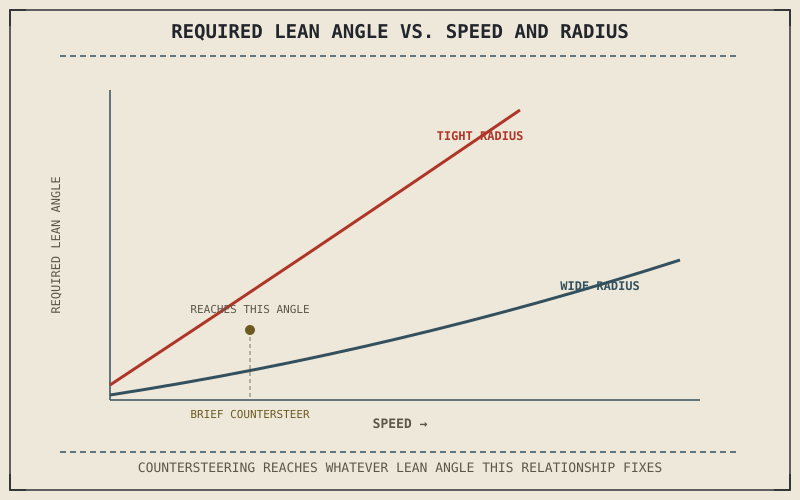

Chapter 4.5 already explained countersteering's mechanism in full: push the right handlebar forward, the front contact patch moves out from under the center of mass, and the bike falls into a lean it then holds against trail's self-centering pull for as long as the corner lasts. What that earlier chapter couldn't yet answer is how much lean a given countersteering input actually needs to produce — because the centripetal force math that determines the required lean angle didn't exist until this part.
Chapter 8.3 closed by naming countersteering as the mechanism that produces the lean it calculated as necessary. This chapter connects the two: countersteering's mechanism from Chapter 4.5, and the lean-angle requirement from Chapter 8.3's centripetal force math.
The Lean Angle a Given Turn Actually Requires
Chapter 8.3 established that centripetal force requirements grow with the square of speed and shrink with a larger turn radius, and that lean angle is the mechanism balancing that force against gravity. Put numbers to it and the relationship is direct: the required lean angle depends only on speed and turn radius, not on the motorcycle's weight or the rider's size, since both centripetal force and the gravitational moment it's balancing scale with mass identically and the mass term cancels out. This is why a heavily loaded touring bike and a lightweight sportbike lean to the same angle through the same corner at the same speed — countersteering isn't producing an amount of lean tailored to the specific bike, it's producing the lean angle that specific combination of speed and radius demands, regardless of what's sitting on top of the wheels.
Why a Bigger Countersteering Push Doesn't Mean More Lean, Forever
Chapter 4.5 described the countersteering input as brief — a momentary push, not a sustained one — and Chapter 8.3's lean-angle math explains why that briefness is enough. The countersteering input's job is only to displace the contact patch long enough to start the bike falling into the lean Chapter 8.3 calculated is required; once that lean angle is reached and the corner's speed and radius stay constant, the countersteering pressure that follows is small and corrective, holding the bike at that specific angle against trail's self-centering pull rather than continuing to add more lean. A rider wanting a tighter, lower-radius line at the same speed needs a larger lean angle by Chapter 8.3's own relationship, and reaches it with a correspondingly firmer, longer countersteering push — the input scales with the target lean angle, not with some fixed "amount of countersteering" independent of what the corner actually demands.
Countersteering doesn't produce an arbitrary amount of lean — it produces exactly the lean angle Chapter 8.3's centripetal force relationship calculates for that specific speed and turn radius, and a mass-independent one at that, since a lightly loaded bike and a heavily loaded one both lean the same amount through the same corner at the same speed.

A graph showing required lean angle rising with speed and falling with turn radius, with the countersteering mechanism from Chapter 4.5 shown as the input that reaches whatever lean angle this relationship demands.
A Common Misconception, Cleared Up Early
It's easy to assume, once countersteering's mechanism is understood, that a stronger rider or a more aggressive push simply produces a more committed, faster corner. What actually sets the required lean angle is speed and turn radius alone, by the relationship Chapter 8.3 established — a rider pushing harder than that relationship calls for doesn't corner faster or better, they overshoot the lean angle the corner actually needs and have to countersteer back the other way to correct it. Countersteering input should match the target lean angle the physics has already fixed, not the rider's sense of effort or commitment.
Where This Leads
The lean angle a corner requires is now fully quantified, but cornering also redistributes load the same way braking did in Part VII, and this book hasn't yet examined that redistribution. Chapter 8.5 turns to load transfer in cornering directly.
Key Concepts to Remember
- The lean angle a corner requires depends only on speed and turn radius, not on the motorcycle's or rider's weight, since the mass term cancels out of the balance between gravity and centripetal force.
- Countersteering's brief input, described in Chapter 4.5, only needs to start the bike falling into that required lean angle, not sustain it for the whole corner.
- Countersteering input should scale with the target lean angle the physics fixes, not with rider effort or a subjective sense of commitment.
Cross-References
| ← Ch. 4.5 | Explained countersteering's mechanism in full; this chapter quantifies exactly how much lean that mechanism needs to produce. |
| ← Ch. 8.3 | Established the centripetal force relationship setting required lean angle; this chapter connects that relationship to countersteering's input. |
| → Ch. 8.5 | Covers load transfer in cornering, extending Part VII's braking-focused load transfer discussion to cornering forces. |